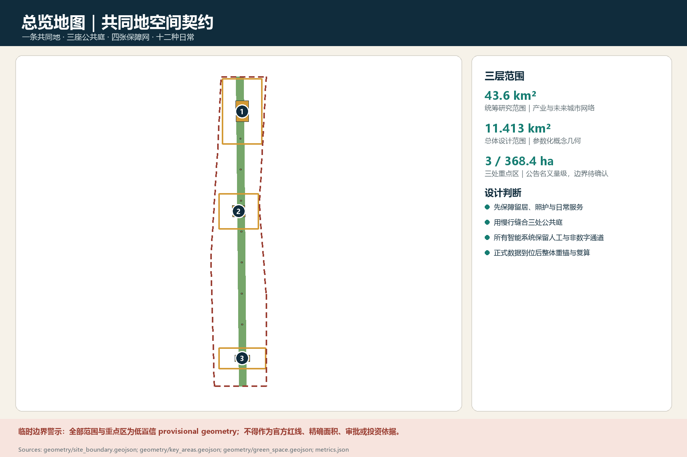
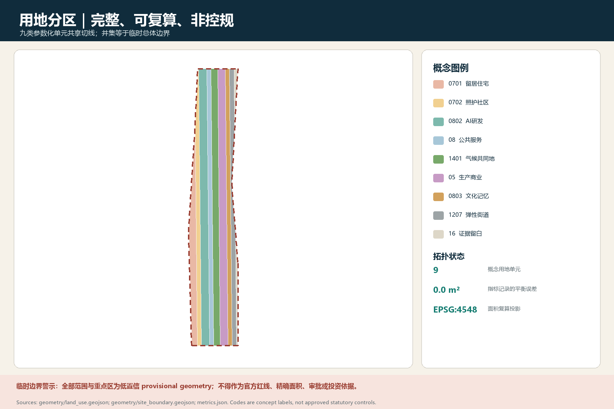
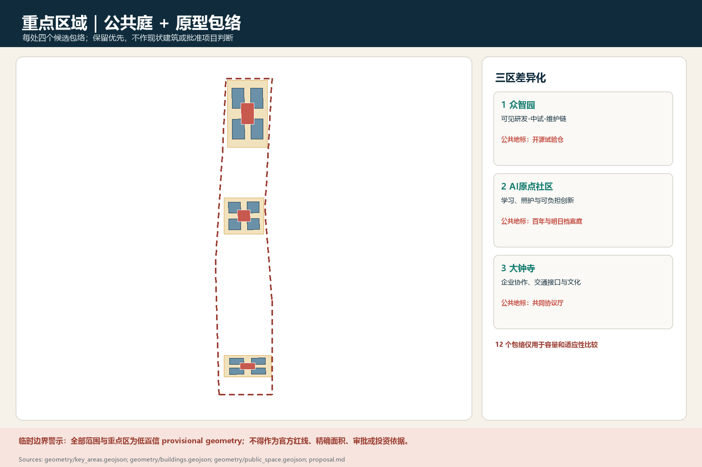
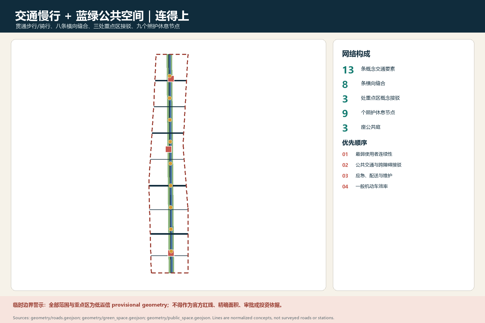
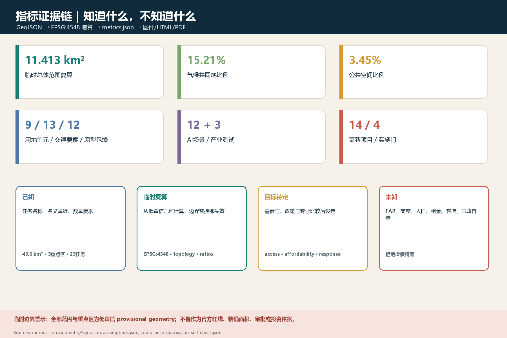

统筹研究范围：AI生态、人才、活动与公共服务协同
本页面全部空间几何均为低置信临时方案，只用于设计讨论与内容审阅；不得作为官方红线、精确面积、审批、征拆或投资依据。
总览地图

三层范围
总体设计范围：更新、交通、蓝绿与公共空间结构
重点区域：三个差异化原型，只使用临时 polygon
用地分区

重点区域与建筑

每重点区四个候选建筑原型；没有现状建筑普查，不作拆建结论。
保留-修补-增补-替换依次过证据门。
开源试验仓、档案庭、共同协议厅均为公共制度型地标概念。
交通慢行与蓝绿公共空间

更新项目与四个实施门
14项首轮项目
- P01 数据与坐标审计
- P02 四方共同调查
- P03 共同地可逆段
- P04 无障碍跨越
- P05 北部开源试验仓
- P06 中部照护学习客厅
- P07 南部公共协议厅
- P08 可负担创新空间
- P09 夜班安心回家线
- P10 京张口述史
- P11 边缘智能测试廊
- P12 医疗AI双盲验证
- P13 路缘物流协商
- P14 公共决策回执台
不是时间表，而是证据门
- 0 证据基线
- 1 可逆试点
- 2 公共利益先行
- 3 经复核扩展
任一阶段未通过安全、可达、公平、申诉或回滚门，项目缩减、修复或退出。
AI 场景与人工复核
12张场景卡（含3项产业测试）
- T01 边缘智能开放测试
- T02 医疗AI双盲验证
- T03 具身机器人接口
- S04 无障碍过街
- S05 夜班回家
- S06 可负担空间
- S07 照护接力
- S08 学童慢行
- S09 热雨舒适
- S10 记忆导览
- S11 路缘物流
- S12 公共决策回执
每张卡的停止条件
最少数据｜人审｜申诉｜人工接管｜非AI替代｜回滚｜退役归档
AI不能决定公共空间进入、基本服务、租赁、就业、执法或医疗诊断。
核心指标

任务覆盖
23 / 23
公告17项与智能体6项均在合规矩阵中建立证据映射；映射完整不等于专业批准。
- agent.1 总体概念与功能统筹已映射
- agent.2 全栈创新生态已映射
- agent.3 AI+场景新范式已映射
- agent.4 公共空间与朝圣地标已映射
- agent.5 京张-中关村-AI文化已映射
- agent.6 全球活动与长期运营已映射
自检状态
- BOUNDARY_TRUSTPASS总体设计边界已明确标记为暂定约束，仅用于方案内容审阅、结构测试和提交校验；取得官方红线后必须重锚并复算，不得用于测绘、审批或法定判断。 / The overall-design boundary is explicitly provisional and is used only for content review, structural testing, and package validation; an official redline must trigger re-anchoring and recalculation before survey, approval, or statutory use.
- KEY_AREAS_TRUSTPASS三个必选重点区域均已提交并标记为暂定空间锚点；其位置与形状不被表述为官方地块，正式 polygon、地籍和权属到位后必须替换。 / All three required key areas are present and labelled as provisional spatial anchors; their locations and shapes are not presented as official parcels and must be replaced when official polygons, cadastre, and tenure data arrive.
- ALIGNMENT_CONFLICT_DISCLOSEDPASSIssue #846 报告的零重叠与约 412.5 米最近距离，以及 Issue #1029 提出的重点区定位不确定性，已在来源、假设、正文和风险触发器中披露；二者只作为重锚警示，不作为官方纠错。 / The zero overlap and approximately 412.5 m nearest distance reported in Issue #846, and the key-area positioning uncertainty raised in Issue #1029, are disclosed across sources, assumptions, narrative, and risk triggers; both are treated as re-anchoring warnings, not official corrections.
- LAND_USE_TOPOLOGYPASS九个概念用地单元在 EPSG:4548 中构成总体暂定边界的完整参数化分区，空隙、越界与重叠合计误差为 0.0 平方米；该拓扑通过不赋予其法定用地性质。 / Nine conceptual land-use zones form a complete parametric partition of the provisional overall boundary in EPSG:4548, with a combined gap, outside, and overlap error of 0.0 sqm; topology validity does not confer statutory land-use status.
- METRIC_RECOMPUTATIONPASS37 项指标按 known、calculated provisional、target pending 与 unknown 分层；几何交换采用 EPSG:4326，面积与长度在 EPSG:4548 中复算，缺少正式数据的 FAR、高度、人口、交通分担、雨洪容量和可负担比例保持 unknown。 / Thirty-seven metrics are separated into known, calculated provisional, target pending, and unknown states; geometry is exchanged in EPSG:4326 and recomputed in EPSG:4548, while FAR, height, population, mode share, stormwater capacity, and affordability remain unknown where official evidence is absent.
- PROFESSIONAL_EVIDENCEPASS十三章正文的主张已就近链接数据、指标、来源、标准、假设与专业深度证据；23 项合规响应、9 项标准响应和 15 项设计深度响应均为项目特定内容，并已通过 professional_review.py。 / Claims in all thirteen chapters are locally linked to data, metrics, sources, standards, assumptions, and design-depth evidence; all 23 compliance, 9 standards, and 15 design-depth responses are project-specific and pass professional_review.py.
- BILINGUAL_PACKAGEPASS中文与英文的完整正文、离线报告、可视化入口、五组图件及 A3/A0 PDF 均成对存在，英文正文保持与中文相同的十三章结构和证据序列。 / Complete Chinese and English proposals, offline reports, visualization entries, five figure sets, and A3/A0 PDFs are paired; the English proposal preserves the same thirteen-section structure and evidence sequence as the Chinese proposal.
- VISUAL_STATICPASS中英文可视化页面均可离线打开，不加载 CDN、远程瓦片、外部脚本、外部字体、API 或 iframe；页面显示指标与 metrics.json 一致，并已通过 visual_review.py。 / Both visualization pages work offline without CDNs, remote tiles, external scripts, external fonts, APIs, or iframes; displayed metrics agree with metrics.json and pass visual_review.py.
- PDF_PAGE_QAPASS四份 PDF 已逐页渲染检查，共 30 页：中英文 A3 文册各 8 页、中英文 A0 展板各 7 页；页面为准确的横向 A3/A0 尺寸，未发现裁切、乱码、黑块或远程依赖。 / All four PDFs were rendered and checked page by page, 30 pages total: eight pages in each Chinese/English A3 booklet and seven in each Chinese/English A0 board set; pages use exact landscape A3/A0 sizes with no clipping, garbled text, black blocks, or remote dependencies.
- AI_GOVERNANCEPASS十二张 AI 场景卡（含三项产业测试）均说明空间锚点、数据边界、非 AI 替代、人工复核、申诉、回滚和停止条件；公共空间准入、基本服务和高风险专业判断不交由模型单独决定。 / All twelve AI scenario cards, including three industry tests, specify spatial anchors, data boundaries, non-AI alternatives, human review, appeal, rollback, and stop conditions; models do not independently decide public-space access, essential services, or high-risk professional judgments.
- COPYRIGHT_AND_MODEL_DISCLOSUREPASS版权声明记录了原创文本、参数化几何、脚本和图形的生成边界；提交包未复制第三方图片、标志或远程底图，来源使用限制、字体和 AI 模型信息分别在声明、sources.json 与 agent.json 中披露。 / The copyright statement records the provenance of original text, parametric geometry, scripts, and graphics; no third-party imagery, logos, or remote basemaps are copied, and source-use limits, fonts, and AI model information are disclosed in the statement, sources.json, and agent.json.
- PROVISIONAL_PRECISION_LIMITPASS官方边界、重点区、地籍权属、现状建筑、控规、道路与轨道、市政、文保、人口住房及生态实测等缺口已登记为 17 条假设和重算触发器；现有方案不作法定、审批、征收、投资或施工精度承诺。 / Gaps in official boundaries, key areas, cadastre and tenure, existing buildings, controls, roads and rail, utilities, heritage, population and housing, and ecological surveys are registered as 17 assumptions and recalculation triggers; the current proposal makes no statutory, approval, expropriation, investment, or construction-precision claim.
可控项通过，资料缺口保留
临时边界提示不是专业确认。正式矢量、控规、权属、文保、现状建筑、交通、市政、生态与人口资料到位后需重算。
来源
正式任务依据
OFFICIAL-ANNOUNCEMENT · AGENT-TASKBOOK · SITE-PACKAGE · FORMAL-SUBMISSION-GUIDE
可复算空间层
geometry/*.geojson · metrics.json · EPSG:4548
争议与触发器
Issue #846 · Issue #1029 · official geometry replacement
假设
A-BOUNDARY-001provisional_constraint_pending_official_replacementA-KEY-AREAS-001provisional_constraint_pending_official_replacementA-OSM-MISMATCH-001unresolved_background_conflictA-CONTROLS-001pending_professional_and_authority_confirmationA-HERITAGE-CONTROLS-001pending_heritage_specialist_confirmationA-PARCEL-OWNERSHIP-001missing_baselineA-BUILDINGS-001missing_baselineA-TRANSPORT-001missing_baselineA-MUNICIPAL-SAFETY-001missing_baselineA-POPULATION-HOUSING-001missing_distributional_baselineA-PUBLIC-SERVICES-001missing_baselineA-CLIMATE-ECOLOGY-001missing_baseline
边界原则
不把缺失数据补成漂亮数字；不把概念线画成现状道路；不把原型包络写成批准建筑；不把AI建议当专业责任。